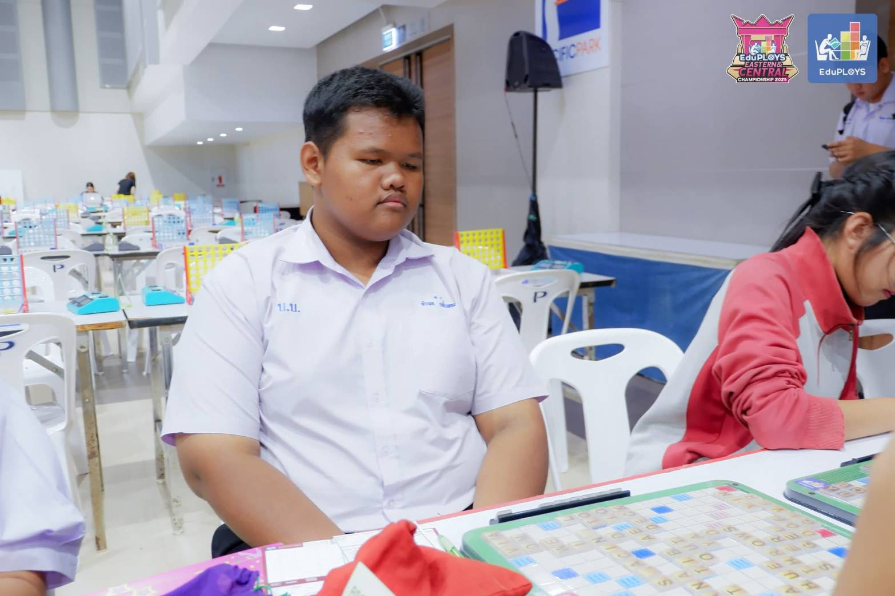
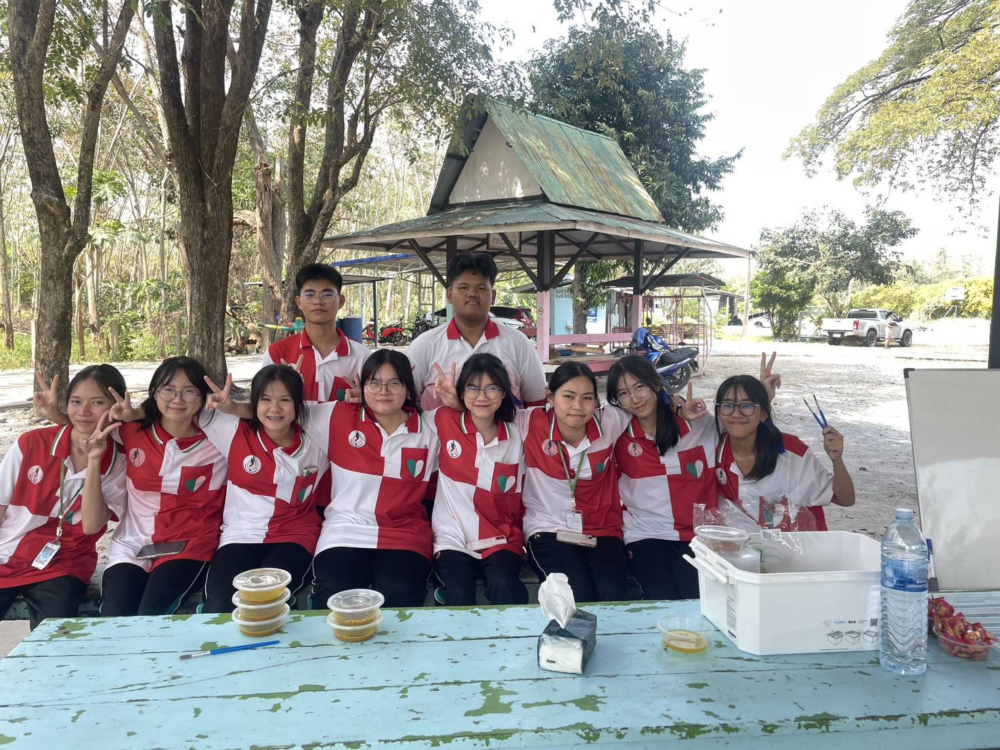
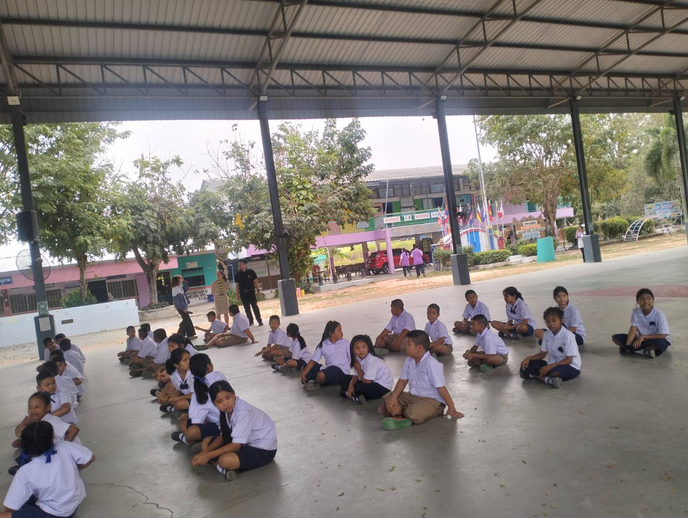
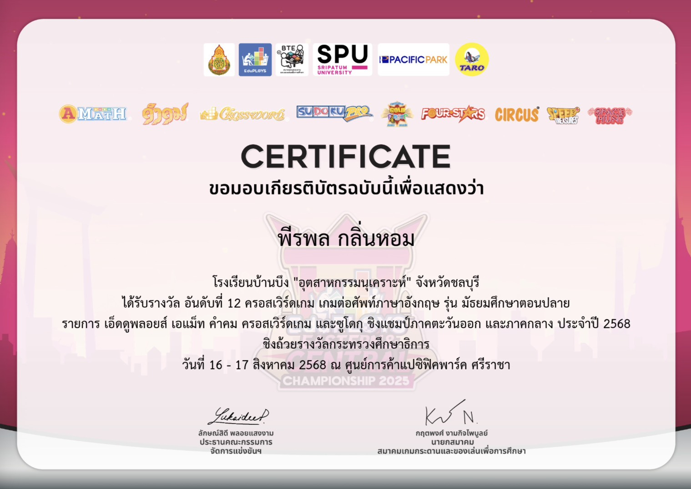

03 / ACHIEVEMENTS
ACHIEVEMENTS
ผลงานและเกียรติบัตรที่สะท้อนประสบการณ์ของผม

อันดับที่ 12
การแข่งขัน Crossword Game (ภาพที่ 84689)
เข้าร่วมการแข่งขัน Crossword Game ระดับมัธยมศึกษาตอนปลาย และได้รับรางวัลอันดับที่ 12
- ฝึกการใช้คำศัพท์ภาษาอังกฤษ
- ฝึกการคิดวิเคราะห์และการวางแผน
- เรียนรู้การตัดสินใจภายใต้เวลาที่จำกัด

อันดับที่ 12
การแข่งขัน Crossword Game (ภาพที่ 84135)
ภาพบรรยากาศระหว่างการแข่งขัน Crossword Game และการฝึกทักษะภาษาอังกฤษผ่านเกมคำศัพท์
- พัฒนาสมาธิและความรอบคอบ
- ฝึกการทำงานร่วมกับคู่แข่งขัน

กิจกรรม
กิจกรรมพี่สอนน้อง (ภาพที่ 1)
เข้าร่วมกิจกรรมค่ายพี่สอนน้อง โรงเรียนบ้านห้วยมะไฟ ตามโครงการห้องเรียนพิเศษ MSEP
- ฝึกการทำงานร่วมกับผู้อื่น
- เรียนรู้การแบ่งปันและช่วยเหลือน้อง ๆ

กิจกรรม
กิจกรรมพี่สอนน้อง (ภาพที่ 2)
มีส่วนร่วมในการถ่ายทอดความรู้และทำกิจกรรมร่วมกับนักเรียนระดับประถมศึกษา
- ฝึกการสื่อสารและการถ่ายทอดความรู้
- สร้างรอยยิ้มและแรงบันดาลใจให้กับน้อง ๆ

หลักสูตรเพิ่มเติม
หลักสูตรการป้องกันการทุจริต
ผ่านการเรียนและทดสอบตามเกณฑ์ของหลักสูตรต้านทุจริตศึกษา รายวิชาเพิ่มเติม “การป้องกันการทุจริต” ระดับมัธยมศึกษาปีที่ 5
- สำนักงาน ป.ป.ช.
- วันที่ 12 กุมภาพันธ์ 2569
- สะท้อนความตระหนักด้านความซื่อสัตย์และความรับผิดชอบต่อสังคม

เกียรติบัตร
เกียรติบัตรการแข่งขัน Crossword
เกียรติบัตรการเข้าร่วมการแข่งขัน Crossword Game และได้รับรางวัลอันดับที่ 12
- พัฒนาทักษะภาษาอังกฤษและคำศัพท์
- ฝึกสมาธิ การคิดวิเคราะห์ และการวางแผน

เกียรติบัตร
เกียรติบัตรกิจกรรมพี่สอนน้อง
เกียรติบัตรการเข้าร่วมกิจกรรมค่ายพี่สอนน้อง ตามโครงการห้องเรียนพิเศษ MSEP
- ฝึกการสื่อสารและการถ่ายทอดความรู้
- เรียนรู้การทำงานร่วมกับผู้อื่นและการแบ่งปัน